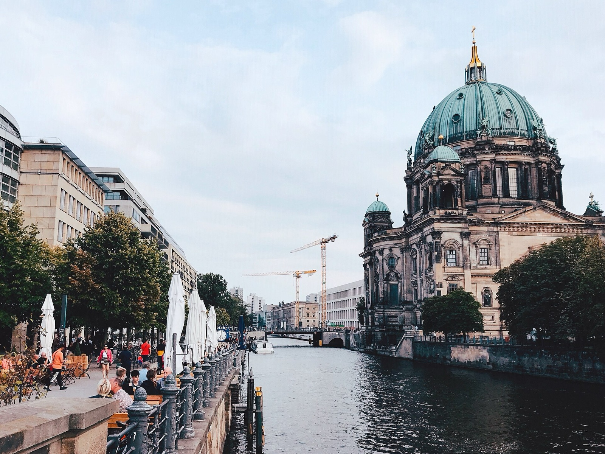
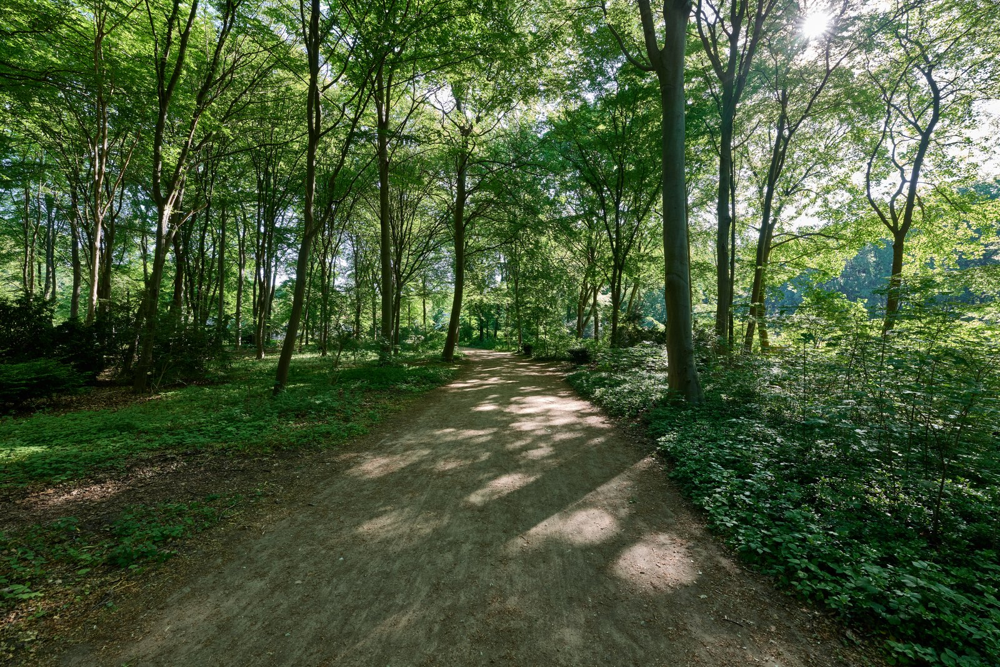
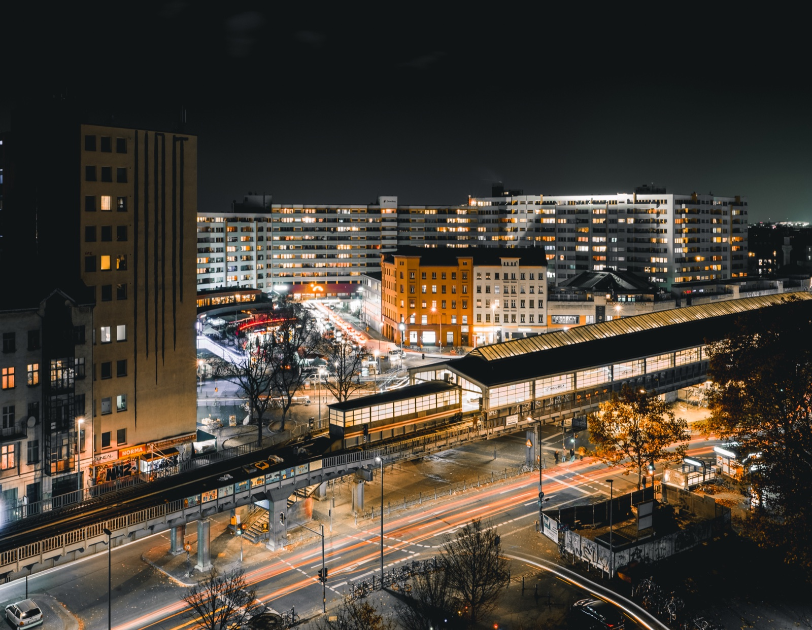
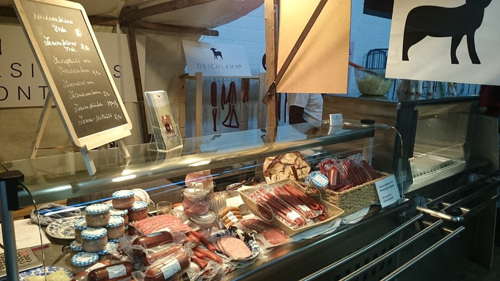

<!doctype html>
<meta charset="utf-8">
<title>Travelling Alone in Berlin - image contact sheet</title>
<style>body{font:16px Arial;background:#f3eddb;color:#123d18;margin:24px}main{display:grid;grid-template-columns:repeat(2,minmax(240px,1fr));gap:18px;max-width:1000px}figure{margin:0;background:#fff;padding:10px;border:1px solid #d8e2cf}img{display:block;width:100%;height:220px;object-fit:cover}figcaption{padding:9px 2px 2px;font-size:13px}</style>
<main>
  <figure><figcaption>01 Alexanderplatz night tram, cover</figcaption></figure>
  <figure><figcaption>02 Museum Island, historic-centre stop</figcaption></figure>
  <figure><figcaption>03 Tiergarten path, quiet stop</figcaption></figure>
  <figure><figcaption>04 Kottbusser Tor, neighbourhood timing</figcaption></figure>
  <figure><figcaption>05 Markthalle Neun, food stop</figcaption></figure>
</main>
